(cda_gss.dta | GSS 1972-2021 CDA - Categorical Data Analysis | date created 202
> 3)
tabstat income, stat(mean)
Variable | Mean
-------------+----------
income | 32185.98
------------------------
regress income
Source | SS df MS Number of obs = 39,163
-------------+---------------------------------- F(0, 39162) = 0.00
Model | 0 0 . Prob > F = .
Residual | 3.3178e+13 39,162 847199501 R-squared = 0.0000
-------------+---------------------------------- Adj R-squared = 0.0000
Total | 3.3178e+13 39,162 847199501 Root MSE = 29107
------------------------------------------------------------------------------
income | Coefficient Std. err. t P>|t| [95% conf. interval]
-------------+----------------------------------------------------------------
_cons | 32185.975 147.080 218.832 0.000 31897.694 32474.257
------------------------------------------------------------------------------
library(haven) # import Stata data and labelslibrary(dplyr) # data manipulationlibrary(sjmisc) # frequency tableslibrary(ggplot2) # graphslibrary(marginaleffects) # predictions and marginal effectslibrary(cleanplots) # graph schemecleanplots_defaults()gss <-read_dta("https://tdmize.github.io/data/data/cda_gss.dta")mean(gss$income, na.rm =TRUE)
[1] 32185.98
summary(lm(income ~1, data = gss))
Call:
lm(formula = income ~ 1, data = gss)
Residuals:
Min 1Q Median 3Q Max
-31850 -19586 -7248 9897 127814
Coefficients:
Estimate Std. Error t value Pr(>|t|)
(Intercept) 32186.0 147.1 218.8 <2e-16 ***
---
Signif. codes: 0 '***' 0.001 '**' 0.01 '*' 0.05 '.' 0.1 ' ' 1
Residual standard error: 29110 on 39162 degrees of freedom
(29683 observations deleted due to missingness)
E(income) ≈ 32,186
Conditional expectations
Conditional expectations set further conditions (which are specified to the right of a vertical bar):
Summary for variables: income
Group variable: woman (Woman R)
woman | Mean
-------+----------
Men | 40096.77
Women | 24153.19
-------+----------
Total | 32187.9
------------------
Source | SS df MS Number of obs = 39,153
-------------+---------------------------------- F(1, 39151) = 3174.90
Model | 2.4880e+12 1 2.4880e+12 Prob > F = 0.0000
Residual | 3.0681e+13 39,151 783646066 R-squared = 0.0750
-------------+---------------------------------- Adj R-squared = 0.0750
Total | 3.3169e+13 39,152 847173151 Root MSE = 27994
------------------------------------------------------------------------------
income | Coefficient Std. err. t P>|t| [95% conf. interval]
-------------+----------------------------------------------------------------
woman |
Women | -1.59e+04 282.957 -56.346 0.000 -1.65e+04 -1.54e+04
_cons | 40096.773 199.290 201.198 0.000 39706.159 40487.386
------------------------------------------------------------------------------
di 24153.19 - 40096.77
-15943.58
summary(lm(income ~ woman, data = gss))
Call:
lm(formula = income ~ woman, data = gss)
Residuals:
Min 1Q Median 3Q Max
-39761 -17819 -5698 9364 135847
Coefficients:
Estimate Std. Error t value Pr(>|t|)
(Intercept) 40096.8 199.3 201.20 <2e-16 ***
woman -15943.6 283.0 -56.35 <2e-16 ***
---
Signif. codes: 0 '***' 0.001 '**' 0.01 '*' 0.05 '.' 0.1 ' ' 1
Residual standard error: 27990 on 39151 degrees of freedom
(29693 observations deleted due to missingness)
Multiple R-squared: 0.07501, Adjusted R-squared: 0.07499
F-statistic: 3175 on 1 and 39151 DF, p-value: < 2.2e-16
24153.19-40096.77
[1] -15943.58
With a binary independent variable (IV), the regression coefficient represents the group difference; the difference in means between the category coded 1 and the category coded 0
The gender variable woman is coded as woman = 1; man = 0
Therefore, the regression coefficient tells us how much more (or less) women earn than men
On average, women earn about $15,900 less than men
Interpreting the intercept
What does the constant (AKA intercept) term tell us in this model?
It is the expected value when all IVs are 0
In this case, when the variable woman = 0 this refers to men
So, it is the mean of income for men in the sample
I rarely ever interpret the intercept
Usually, you have some variables in the model where 0 is not a meaningful value (e.g., if age is in the model and data is all adults)
You can do things to make the intercept interpretable (e.g., mean-center all variables) but I find this unnecessary
I find it more straightforward to interpret predictions (more later)
A theme of the class is to go beyond the coefficient estimates for interpretation
Regression with a nominal IV
Nominal variables have 3+ unordered categories*
E.g., Race-ethnicity, religious affiliation, political party, etc.
Can estimate conditional expectations in the same way as binary—just with additional categories
Summary for variables: income
Group variable: race4 (Race-ethnicity)
race4 | Mean
---------+----------
White | 33693.02
Black | 24724.65
Other | 36037.94
Hispanic | 26005.54
---------+----------
Total | 32182.69
--------------------
qui margins, at(age=(20(5)80))marginsplot, noci ylab(0(10000)50000) ///title("[1.2.a] Predictions for income across range of age") ///ytitle("Income")
Variables that uniquely identify margins: age
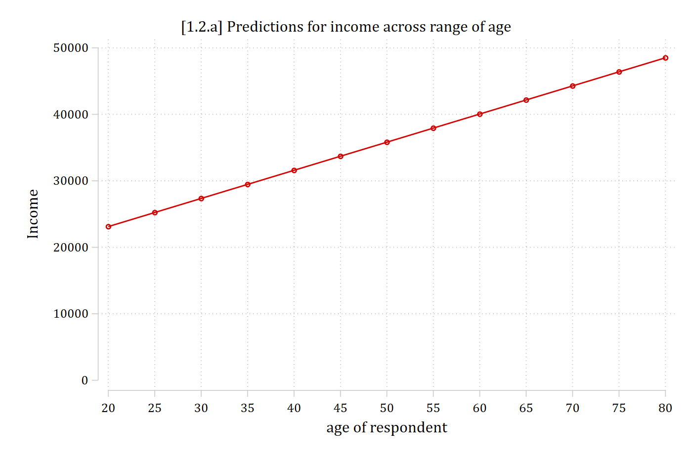
plot_predictions(agemod, condition =list(age =seq(20, 80, 5)), vcov =FALSE) +scale_y_continuous(breaks =seq(0, 50000, 10000), limits =c(0, 50000)) +labs(title ="[1.2.a] Predictions for income across range of age",x ="Age", y ="Income")
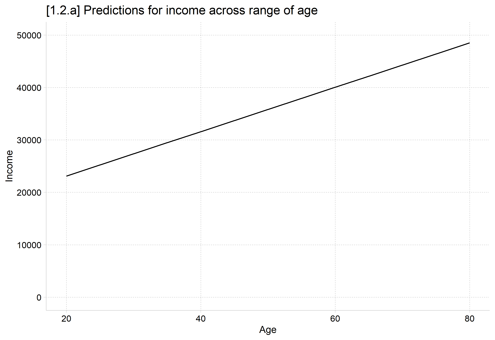
I arbitrarily chose to calculate a 20-year increase in age above
A regression coefficient always quantifies a one-unit increase
“The slope estimate indicates the average change in y associated with a unit change in x”
Put more formally:
A one unit increase in x is associated with a β increase/decrease in y
Plugging in our variables:
A one unit increase in age is associated with a $423 increase in income
Advice for more naturally worded interpretations
The interpretation above is correct but not very satisfying; it sounds like a robot wrote it; it does not pass the “grandma test”
“A one unit increase in age” is weird phrasing; instead, substitute “an additional year of age” or “getting one year older”
Always think about the metric of your variables and interpret them in ways that reflect how you would naturally talk about that metric
Each additional year of age is associated with a $423 increase in income
With a binary (or nominal) IV, the regression coefficient represents a group difference; I recommend interpreting it as such. E.g., Which of these interpretations is easiest to understand and most natural?
A one unit increase in gender is associated with a $15,900 decrease in income
A one unit increase in identifying as a woman is associated with a $15,900 decrease in income
On average, women earn about $15,900 less than men
Regression with multiple IVs
Most regression analyses in the health and social sciences include multiple IVs; e.g., within sociology 10 to 15 IVs is common
Regression with a single IV is sometimes referred to as simple regression; regression with multiple IVs as multiple regression (n.b. not “multivariate”)
Sometimes an analysis will have multiple focal IVs: independent variables that are integral to the theoretical questions and hypotheses being tested
E.g., For the 2016 article referenced above, I only put the focal IVs into the tables in the main text. These were variables I had specific hypotheses about
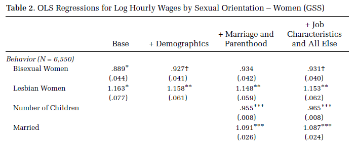
Often, there will be many control variables: IVs that are not of specific interest but that are important to account for in the analysis
We control for IVs because we suspect they have shared variation with the IVs and DV; controlling or “accounting for” the additional IVs helps isolate the effect of the focal IV(s)
Control variables and causality
A motivation to include multiple IVs in the same model is because they are correlated (collinear)
There are two main motivations for adding control variables to a regression model: mediation and confounding
Sticking with the gender (IV) and wages (DV) example, it would be reasonable to hypothesize that women tend to earn less than men:
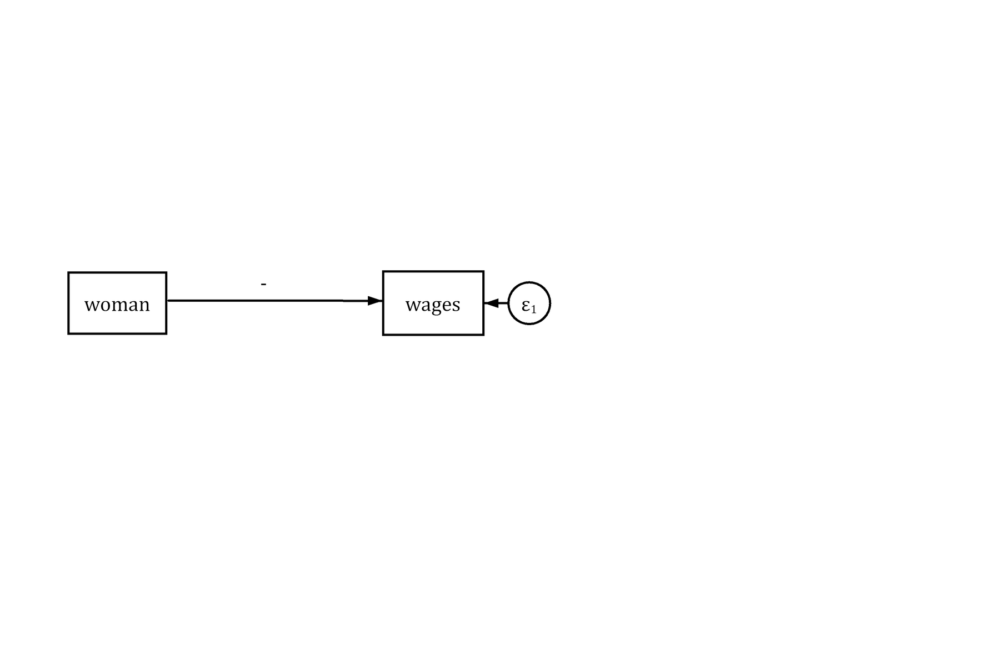
However, other factors are associated with both gender and wages. The simple model represented above suffers from omitted variable bias
From a causality framework, we would not expect this simple model to uncover the causal effect of gender as other factors may explain some or all of the gender wage gap
*Note the direction of the arrow in the diagram above. The IV (woman) is the presumed cause of the DV (wages)
Mediation
Mediation occurs when the effect of your IV on the DV operates partially through a third (mediating) variable
For example, differences in the occupations men and women work in may explain some of the gender wage gap
For simplicity, consider a binary variable indicating whether the person works in a leadership role (= 1) or not (= 0)
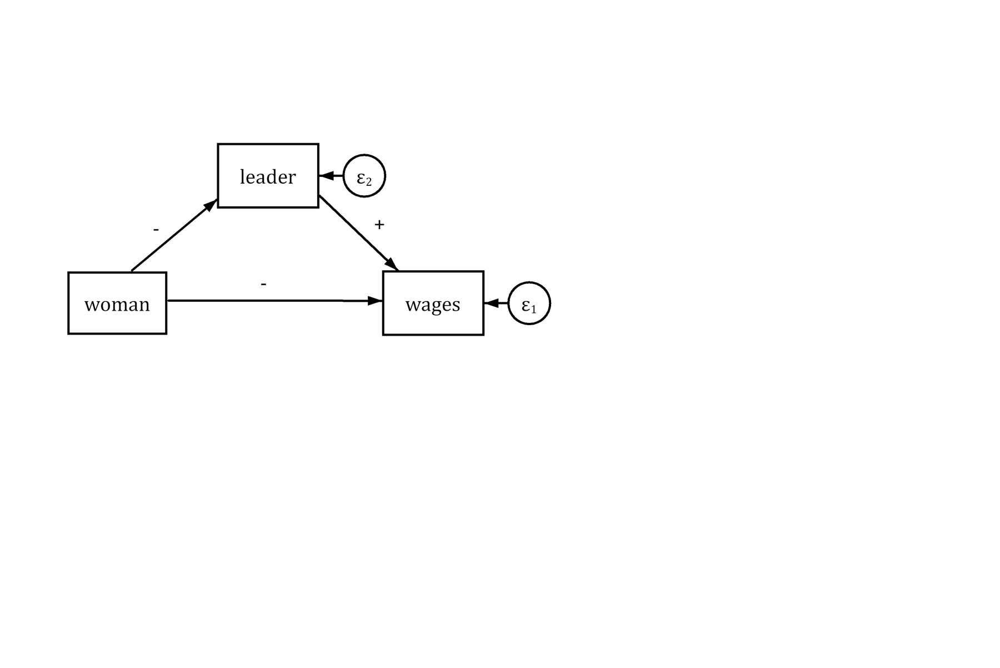
Women may be less likely to work in leadership roles. Leadership roles are associated with higher wages
Controlling for leader should lessen the effect of woman in the model as some of the variation in wages associated with gender has now been explained by leader
wages woman supervis
Min. : 2.130 Min. :0.00 Min. :0.0000
1st Qu.: 2.130 1st Qu.:0.00 1st Qu.:0.0000
Median : 4.444 Median :1.00 Median :0.0000
Mean : 9.035 Mean :0.62 Mean :0.2583
3rd Qu.: 12.000 3rd Qu.:1.00 3rd Qu.:1.0000
Max. :150.000 Max. :1.00 Max. :1.0000
NAs :121 NAs :88
# leader: supervis with labels for leadershipah4 <- ah4 |>mutate(leader =factor(supervis, levels =0:1, labels =c("Not a Leader", "Leader")),woman =as_factor(woman))frq(ah4, woman, leader)
Woman R (woman) <categorical>
# total N=1021 valid N=1021 mean=1.62 sd=0.49
Value | N | Raw % | Valid % | Cum. %
--------------------------------------
Man | 388 | 38 | 38 | 38
Woman | 633 | 62 | 62 | 100
<NA> | 0 | 0 | <NA> | <NA>
leader <categorical>
# total N=1021 valid N=933 mean=1.26 sd=0.44
Value | N | Raw % | Valid % | Cum. %
---------------------------------------------
Not a Leader | 692 | 67.78 | 74.17 | 74.17
Leader | 241 | 23.60 | 25.83 | 100.00
<NA> | 88 | 8.62 | <NA> | <NA>
summary(lm(wages ~ woman, data = ah4))
Call:
lm(formula = wages ~ woman, data = ah4)
Residuals:
Min 1Q Median 3Q Max
-9.699 -5.233 -4.506 2.637 142.637
Coefficients:
Estimate Std. Error t value Pr(>|t|)
(Intercept) 11.8295 0.6814 17.360 < 2e-16 ***
womanWoman -4.4666 0.8615 -5.184 2.68e-07 ***
---
Signif. codes: 0 '***' 0.001 '**' 0.01 '*' 0.05 '.' 0.1 ' ' 1
Residual standard error: 12.51 on 898 degrees of freedom
(121 observations deleted due to missingness)
Multiple R-squared: 0.02906, Adjusted R-squared: 0.02798
F-statistic: 26.88 on 1 and 898 DF, p-value: 2.678e-07
summary(lm(wages ~ woman + leader, data = ah4))
Call:
lm(formula = wages ~ woman + leader, data = ah4)
Residuals:
Min 1Q Median 3Q Max
-11.272 -5.053 -4.518 2.620 140.947
Coefficients:
Estimate Std. Error t value Pr(>|t|)
(Intercept) 11.1846 0.7340 15.237 < 2e-16 ***
womanWoman -4.3496 0.8609 -5.052 5.29e-07 ***
leaderLeader 2.2176 0.9526 2.328 0.0201 *
---
Signif. codes: 0 '***' 0.001 '**' 0.01 '*' 0.05 '.' 0.1 ' ' 1
Residual standard error: 12.48 on 897 degrees of freedom
(121 observations deleted due to missingness)
Multiple R-squared: 0.03489, Adjusted R-squared: 0.03274
F-statistic: 16.22 on 2 and 897 DF, p-value: 1.208e-07
As expected, the effect of gender is reduced after controlling for whether the worker holds a leadership position (more on how to provide a statistical significance test of this difference later in the course)
Women earn about $4.35 less an hour than men, after accounting for whether the worker holds a leadership position
Confounding
A confounding variable is one that influences both the IV and the DV. This can cause a spurious relationship between the IV and DV (i.e., a correlation between them that is not causal)
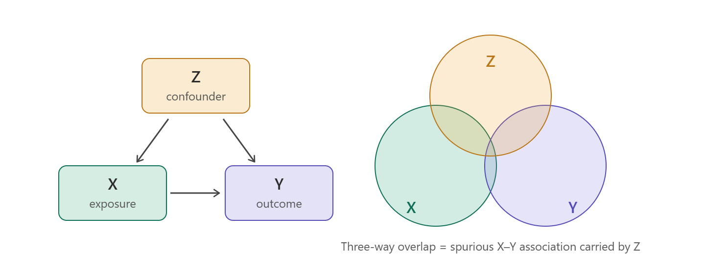
E.g., consider the relationship between income (IV) and happiness (DV)
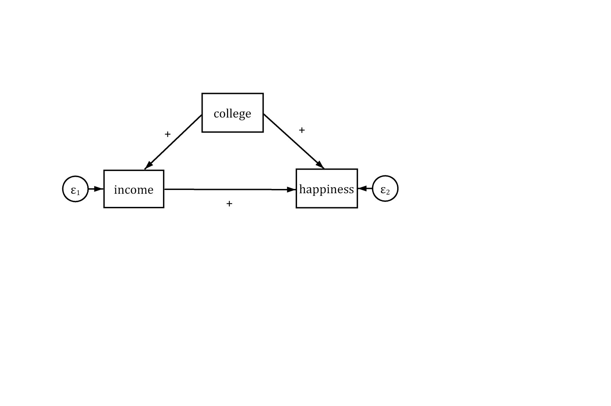
More income is associated with more self-reported happiness. However, a third variable—education (measured as college degree or not)—is a cause of both income and happiness
Without including college in the model our estimate for income would be spuriously large—indicating a larger effect of income on happiness than its true causal effect
(cda_gss.dta | GSS 1972-2021 CDA - Categorical Data Analysis | date created 202
> 3)
sum vhappy income edyrs
Variable | Obs Mean Std. dev. Min Max
-------------+---------------------------------------------------------
vhappy | 64,068 .3060186 .4608411 0 1
income | 39,163 32185.98 29106.69 336 160000
edyrs | 68,603 12.97949 3.186762 0 20
replace income = income / 1000
(68,846 real changes made, 29,683 to missing)
lab var income "Income in 1000s"* Create a continuous versionof happiness just for examplequilogit vhappy i.race3 c.age##c.age i.woman /// i.married i.parent i.relig i.employedpredict prhappy
Source | SS df MS Number of obs = 38,764
-------------+---------------------------------- F(1, 38762) = 490.95
Model | 51768.1069 1 51768.1069 Prob > F = 0.0000
Residual | 4087231.6 38,762 105.444291 R-squared = 0.0125
-------------+---------------------------------- Adj R-squared = 0.0125
Total | 4138999.71 38,763 106.777074 Root MSE = 10.269
------------------------------------------------------------------------------
prhappy | Coefficient Std. err. t P>|t| [95% conf. interval]
-------------+----------------------------------------------------------------
income | 0.040 0.002 22.157 0.000 0.036 0.043
_cons | 29.017 0.078 372.906 0.000 28.864 29.169
------------------------------------------------------------------------------
reg prhappy income college
Source | SS df MS Number of obs = 38,723
-------------+---------------------------------- F(2, 38720) = 248.64
Model | 52425.8242 2 26212.9121 Prob > F = 0.0000
Residual | 4082099.01 38,720 105.426111 R-squared = 0.0127
-------------+---------------------------------- Adj R-squared = 0.0126
Total | 4134524.83 38,722 106.774568 Root MSE = 10.268
------------------------------------------------------------------------------
prhappy | Coefficient Std. err. t P>|t| [95% conf. interval]
-------------+----------------------------------------------------------------
income | 0.038 0.002 19.637 0.000 0.034 0.042
college | 0.353 0.124 2.835 0.005 0.109 0.597
_cons | 28.987 0.079 367.470 0.000 28.832 29.141
------------------------------------------------------------------------------
summary(gss[c("vhappy", "income", "edyrs")])
vhappy income edyrs
Min. :0.000 Min. : 336 Min. : 0.00
1st Qu.:0.000 1st Qu.: 12600 1st Qu.:12.00
Median :0.000 Median : 24938 Median :12.00
Mean :0.306 Mean : 32186 Mean :12.98
3rd Qu.:1.000 3rd Qu.: 42083 3rd Qu.:15.00
Max. :1.000 Max. :160000 Max. :20.00
NAs :4778 NAs :29683 NAs :243
gss <- gss |>mutate(income = income /1000)# Create a continuous version of happiness just for examplehappymod <-glm(vhappy ~as_factor(race3) + age +I(age^2) + woman + married + parent +as_factor(relig) + employed, family = binomial, data = gss)gss$prhappy <-predict(happymod, newdata = gss, type ="response") *100summary(lm(prhappy ~ income, data = gss))
Call:
lm(formula = prhappy ~ income, data = gss)
Residuals:
Min 1Q Median 3Q Max
-24.130 -9.742 1.706 9.334 28.589
Coefficients:
Estimate Std. Error t value Pr(>|t|)
(Intercept) 29.016725 0.077812 372.91 <2e-16 ***
income 0.039797 0.001796 22.16 <2e-16 ***
---
Signif. codes: 0 '***' 0.001 '**' 0.01 '*' 0.05 '.' 0.1 ' ' 1
Residual standard error: 10.27 on 38762 degrees of freedom
(30082 observations deleted due to missingness)
Multiple R-squared: 0.01251, Adjusted R-squared: 0.01248
F-statistic: 491 on 1 and 38762 DF, p-value: < 2.2e-16
summary(lm(prhappy ~ income + college, data = gss))
Call:
lm(formula = prhappy ~ income + college, data = gss)
Residuals:
Min 1Q Median 3Q Max
-24.134 -9.745 1.730 9.349 28.641
Coefficients:
Estimate Std. Error t value Pr(>|t|)
(Intercept) 28.986535 0.078881 367.470 < 2e-16 ***
income 0.037786 0.001924 19.637 < 2e-16 ***
college 0.352856 0.124446 2.835 0.00458 **
---
Signif. codes: 0 '***' 0.001 '**' 0.01 '*' 0.05 '.' 0.1 ' ' 1
Residual standard error: 10.27 on 38720 degrees of freedom
(30123 observations deleted due to missingness)
Multiple R-squared: 0.01268, Adjusted R-squared: 0.01263
F-statistic: 248.6 on 2 and 38720 DF, p-value: < 2.2e-16
After controlling for college completion, a $1,000 increase in income is associated with a 0.038 increase in happiness (on a 100-point happiness scale)
*NOTE: Income is measured in $1,000 units; so, a one-unit increase is $1,000—not $1
Collider variables
A collider is a variable that is caused by both the IV and the DV
The causal arrows “collide” into it—the mirror image of a confounder, where the assumed causality runs to the IV and DV
Controlling for a collider does not remove bias—it creates it
Induces a spurious (non-causal) correlation between the IV and DV
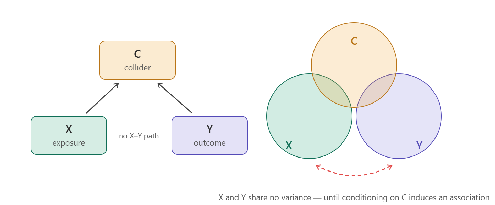
Consider the effect of physical health (IV) on depressive symptoms (DV)
You would probably want to control for socio-economic status (SES) somehow right?
What about a measure of employment status?
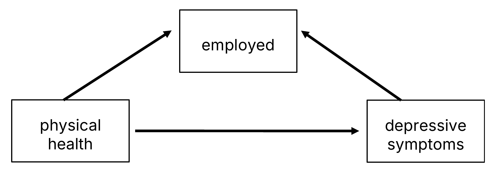
Both physical health and depression are causes of employment status—making employment status a collider
Controlling for employment distorts the estimate of the true causal effect of physical health—it can shrink it, or even flip its sign
Suppressor variables
A suppressor variable shares variation with the IV (x) but is not directly associated with the outcome (y)
Controlling for the suppressor variable will increase the estimate of the effect of the IV (x)
I.e., the relationship was being “suppressed” and the true relationship only revealed after accounting for suppressor
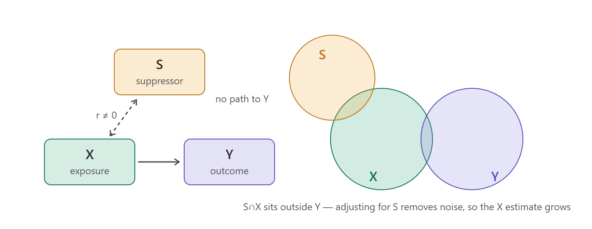
E.g., Consider how well a domain-specific test score will predict success in that domain
E.g., Mechanical, numerical, and spatial ability skills necessary to be a successful pilot
Assessed with a written test
Outcome: demonstrated success at flying
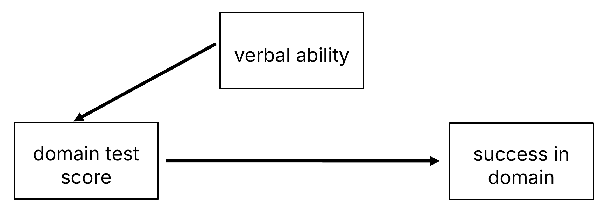
Verbal ability suppressed the predictive power of the test scores, which were very predictive of success, once accounting for it
To control or not to control—that is the question
Decisions about what variables to include as control variables should be guided by a theoretical consideration as to how those possible control variables are related to your focal IV and DV
In general, always want to control for confounders
Often, the convincingness of your case for causality hinges on your ability to include likely confounds in the model
Usually want to control for a suppressor, though they are much more rare
Never want to control for a collider—will induce a spurious correlation
For mediation, sometimes include a mediating variable as a control variable
E.g., As an acknowledgment that there are other pathways through which your focal IV might cause the DV
E.g., We know that education matters partially through income advantages; want to examine what else might matter
However, usually do not want to control for a mediator
Doing so will explain away some of the effect of your IV
Just because an IV’s effect goes through another variable does not diminish its fundamental causal importance (i.e., its total effect)
Sometimes, a mediating relationship will be of primary theoretical interest
In this case, best to provide a statistical test of mediation
And quantify the total, direct, and indirect effect*
Note that “Mediation and confounding are identical statistically and can be distinguished only on conceptual grounds.”(MacKinnon et al. 2000)
Thus, no statistical test will determine this for you. The distinction is made through theory and knowledge of past research
*And/or others, if in the causal mediation framework
“Which variables shall I include in this run? Shall I run X against Y or Y against X? Should I control for this? And if I control for this, must I also control for that? No statistics text or user’s guide will tell you the answers.” (Davis 1985)
Often, we control for a host of things because everyone else in our field does (e.g., gender, race, income, education, age, etc.)
That is, there are normative in addition to theoretical reasons for conditioning on certain factors
For many fields, past studies may have established important control variables to include in your model
In the absence of experimental data with random assignment, your IV of interest will not be truly independent of other important factors, so control variables are often necessary
Causality
Most regression models based on observational data will not be able to determine causality
Health and social scientists tend to be very cautious about causal statements based on the results of regression models fit to observational data
Best to think seriously about the process you are studying and ensure your model reflects the likely causal logic
Make sure the DV is logically the outcome of an IV cause
Add control variables for likely confounding variables
I find drawing a diagram with arrows extremely useful
Can formalize this as a directed acyclic graph (DAG; see Rohrer 2018)
But useful even informally, and as an aid for your model specification decisions
“The correct causal ordering of the variables is determined outside the estimation procedure. In practice, it is based on theoretical considerations, research design, good judgment, and past research.” (Lewis-Beck and Lewis-Beck 2015)
Regression modeling gives us a tool for modeling expectations while conditioning on lots of other factors
E.g., There are lots of reasons why those with higher incomes report happier lives
Sometimes, interested in studying these mechanisms (mediation)
Other times, need to control for confounders to better isolate focal IV’s effect
Multiple regression is a tool for accounting for (conditioning on) other factors you think are important to the relationship between your focal IV(s) and DV
Do not lose track of the fact that we are modeling conditional expectations
This becomes especially important when we move to binary and nominal dependent variables
If you focus on conditional expectations, the most intuitive way to interpret these models is clear
However, it is easy to get lost in the complications of the models and interpret something that is not intuitive or of substantive interest